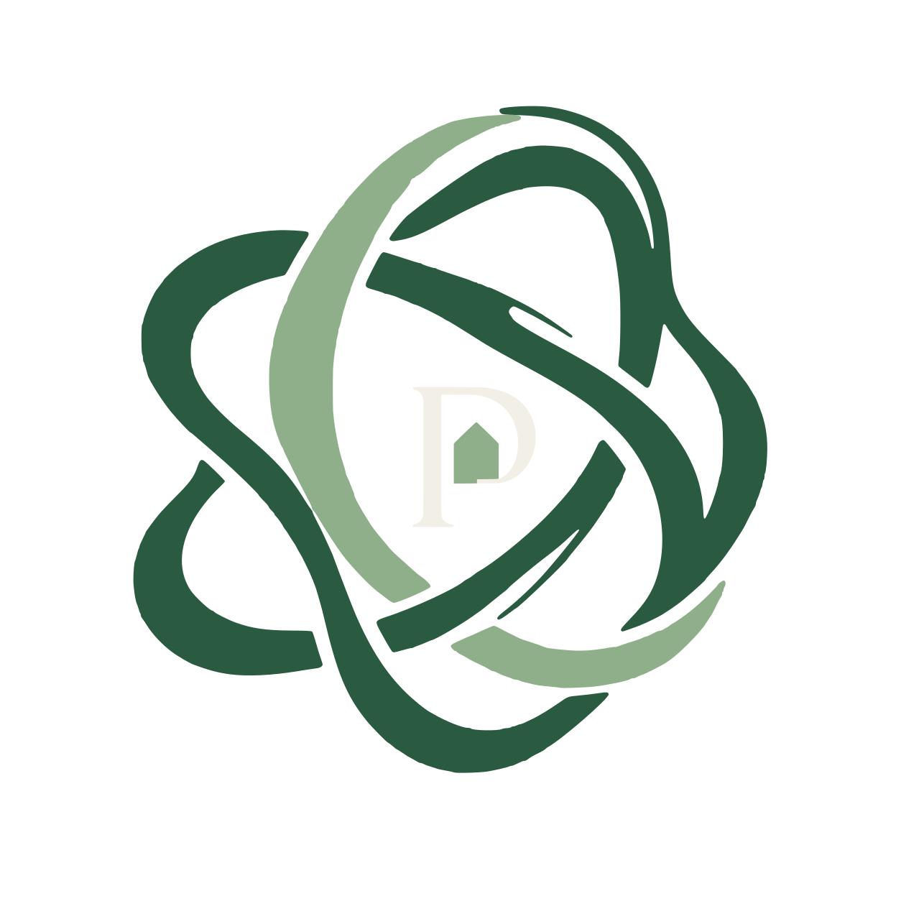

Garden Rooms in Ireland: What Could You Build?
An office, a studio, a room for the kids — or, since 2026, a home.
What are you looking for?
What is PlotNua?
PlotNua helps Irish homeowners discover what their property could make possible — and understand what each option would really take.
We research the possibilities so you can make a more confident decision.
PlotNua
Select a possibility below and watch your garden transform.
Discover What’s Possible...
AI-generated illustration

The PlotNua Atlas
So you can explore what’s possible.
…and counting.
PlotNua's growing record of products, suppliers and prices available to Irish homeowners from Ireland and across Europe.
Every recommendation is matched against Atlas so suggestions are based on real products, not assumptions.
New suppliers, products and verified information are added continuously as Atlas expands.
A Discovery is one researched opportunity for your property.
Some Discoveries include a Property Check — a few simple questions that help you see what the possibility could mean for your own home.
An office, a studio, a room for the kids — or, since 2026, a home.

Let someone nearby grow food on a small part of your garden.


Your driveway is empty for most of the day. Someone nearby may already need it.

Some Irish homes now make their own electricity, and are paid for what they do not use.